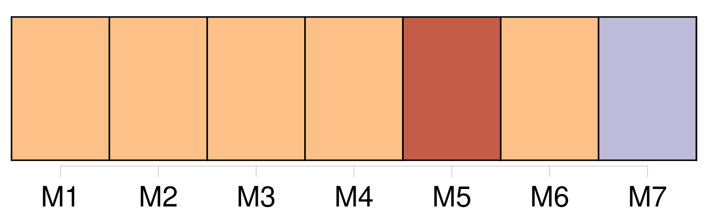
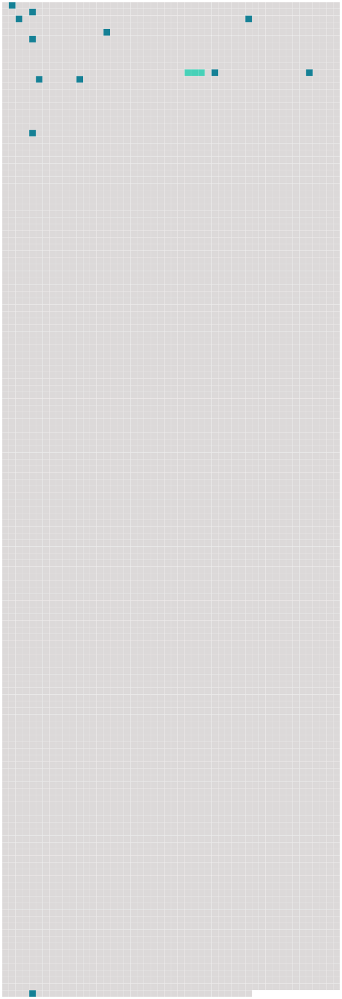

Longueur nb maillons : 13 mentions |
 |
Toujours [nous] avons été bonnes amies. [1 phrases]
Elle m'emmenait partout où elle avait à faire, et il arrivait que [nous] passions des journées entières, aux champs, au jardin ou à la rivière.
Ce qui me plaisait le plus dans les travaux de Manine c'était de suivre les dindes et les pintades qui se cachaient dans les haies pour pondre, et dont il [nous] fallait chercher et découvrir les œufs.
J'étais paresseuse le matin, et Manine me grondait souvent pour me faire lever, mais lorsqu'elle me disait : « Dépêche -toi, [on] va suivre une dinde », j'étais vite réveillée et vêtue. [1 phrases] Elle s'en allait au nid sans se presser, caquetant et picorant de -ci, de -là, s'écartant même de la haie comme si elle avait l'intention d'aller en sens inverse, et faisant mine de rentrer à la basse-cour dès qu'elle s'apercevait de [notre] présence. [1 phrases]
Et brusquement, elle disparaissait sans que rien pût [nous] indiquer l'endroit où elle venait de se nicher. [10 phrases]
Ce soir, [Manine et moi] , [nous] nous plaisons au rappel de ces jours lointains, et la douceur que [nous] en ressentons, est comme un large écran qui [nous] cache le jour présent et [nous] en fait oublier la tristesse. [15 phrases]
Quelques-uns s'arrêtent au seuil de [notre] porte pour s'enquérir de ma santé, et toujours je ressens de l'humiliation à être vue couchée comme une paresseuse. [272 phrases]
Manine, pleine de pitié, ne me laissait rien faire chez [nous] et m'obligeait à me mettre au lit en rentrant ; mais j'étais trop lasse pour dormir, et je passais mes nuits à m'agiter en appelant le sommeil. |
 |
Il est possible de télécharger la ressource sur la page Ortolang |
Si vous avez des questions ou vous voyez des erreurs, merci d'envoyer un mail à silvia.federzoni89@gmail.com |